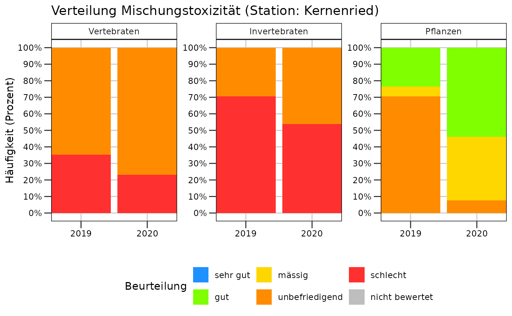
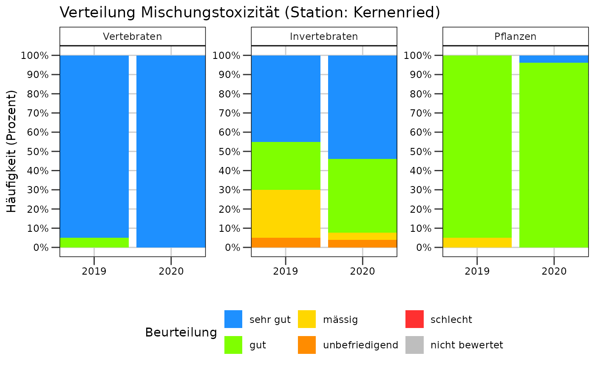

Zeitreihe Häufigkeitsverteilung Mischungstoxizität
plot_misch_mixtox_haeufigkeit.RdZeitreihe Häufigkeitsverteilung Mischungstoxizität
Arguments
- rq_ue_daten
Dataframe mit Output der Funktion
berechne_rq_ue()- stationscode
Station, für welche der Plot erstellt werden soll
- modus
"andauernd": Berücksichtigt nur Stoffe mit einem spezifischen andauernden Grenzwert in der GSchV. Nur Proben mit einer Dauer von >= 10 Tagen werden verwendet und unter Verwendung des CQK beurteilt."kurzzeitig": Berücksichtigt nur Stoffe mit einem spezifischen akuten Grenzwert in der GSchV. Berücksichtigt alle Proben (ausser Stichproben) und verwendet das AQK zur Beurteilung.
Examples
# Häufigkeitsverteilung für andauernde Belastungen
plot_misch_mixtox_haeufigkeit(rq_ue_beispiel_mvwizr,
stationscode = "URT010",
modus = "andauernd"
)
#> Warning: OS reports request to set locale to "de_CH.utf8" cannot be honored
#> Warning: OS reports request to set locale to "de_CH.utf8" cannot be honored
#> Warning: OS reports request to set locale to "de_CH.utf8" cannot be honored
#> Warning: OS reports request to set locale to "de_CH.utf8" cannot be honored

# Häufigkeitsverteilung für kurzzeitige Belastungen
plot_misch_mixtox_haeufigkeit(rq_ue_beispiel_mvwizr,
stationscode = "URT010",
modus = "kurzzeitig"
)
#> Warning: OS reports request to set locale to "de_CH.utf8" cannot be honored
#> Warning: OS reports request to set locale to "de_CH.utf8" cannot be honored
#> Warning: OS reports request to set locale to "de_CH.utf8" cannot be honored
#> Warning: OS reports request to set locale to "de_CH.utf8" cannot be honored
